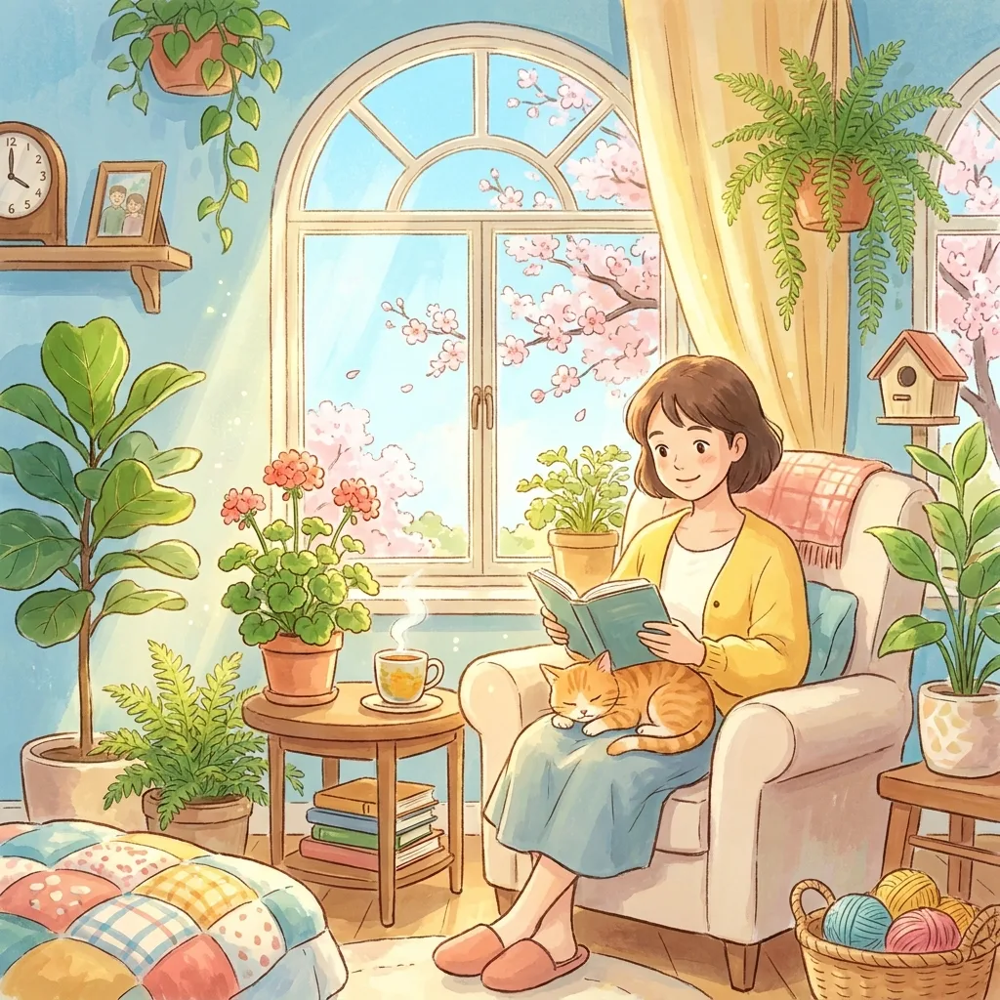
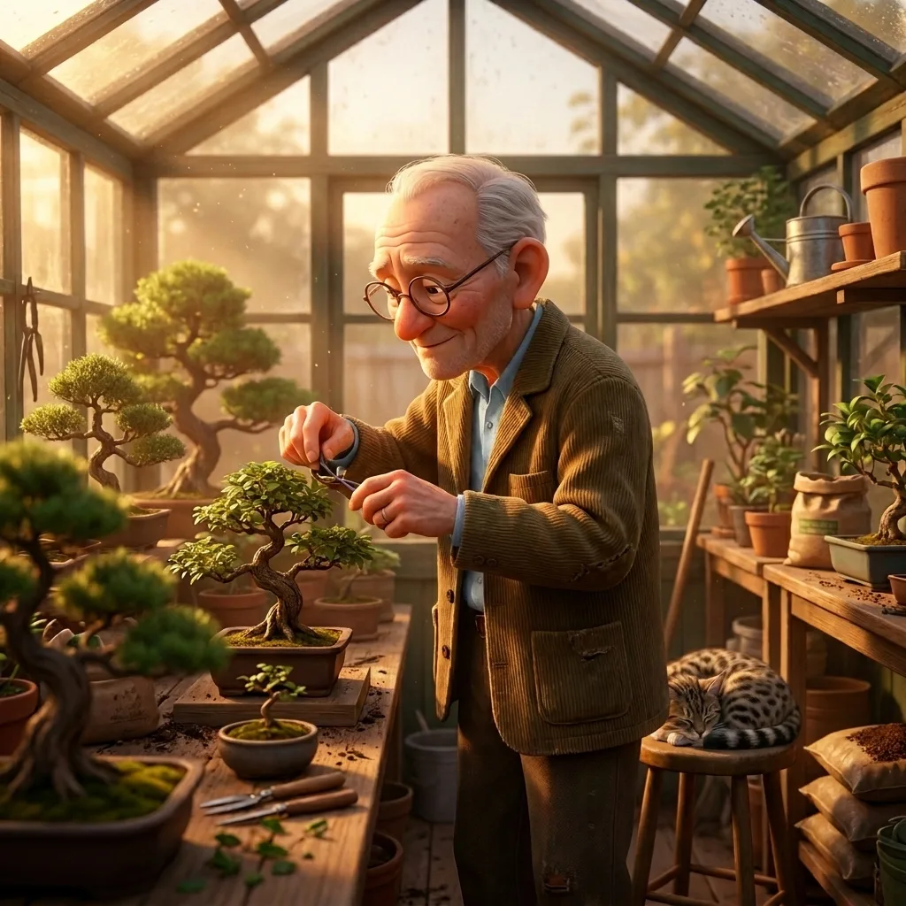

12 Free Printable Activities for Seniors and Care Homes
Activity budgets are small, printer paper is cheap, and the right printed activity can carry an entire afternoon. This list sticks to formats that are genuinely free, printable in minutes, and — crucially — respectful: engaging for adults without feeling like children's busywork.

Visual puzzles
- Spot the difference (large print). The staple of memory-care activity rooms: it relies on recognition rather than recall, works solo or around a table, and has a built-in finish line. Our free generator prints unlimited puzzles with answer keys — use the Easy setting for bold, findable changes and one puzzle per page.
- Large-print word search. Choose themed lists (flowers, old films, cooking) to double as conversation starters. Many free generators exist; always check the font size before printing a stack.
- Odd one out sheets. Rows of four images where one doesn't belong. Quick wins, good for shorter attention spans.
Art and hands
- Adult coloring pages. Florals, mandalas, and vintage scenes. Print on heavier paper if you can — it takes colored pencil better and feels less flimsy.
- Dot-to-dot for adults. Higher-count dot-to-dots (100+) are absorbing and end with a small reveal. Good fine-motor practice.
- Paper folding templates. Simple origami (boats, boxes) printed with fold lines. Do it along with the person, step by step.
Memory and conversation
- Reminiscence question cards. Print and cut prompts like "What was your first job?" or "Describe your childhood kitchen." The printable is just a vehicle — the activity is the conversation.
- "Finish the proverb" sheets. "A stitch in time…" Long-term memory for sayings often remains strong, so this produces confident, happy answers.
- Name that tune lyric sheets. Print first lines of era-appropriate songs; the group completes them (and usually starts singing).
Gentle games
- Printable bingo. Picture bingo (birds, kitchen objects) avoids the number-speed pressure of classic bingo. Laminate cards for reuse.
- Categories sheets. "Name five things you'd find in a garden shed." Solo or shouted out around a table.
- Simple mazes. Choose wide-path, large-format mazes; narrow intricate ones frustrate both eyes and hands.
What activity coordinators say makes the difference
- One activity per page. Cramped sheets read as "worksheet"; a single generous puzzle reads as "activity".
- Adult artwork and adult framing. The same puzzle can feel dignified or infantilizing depending on presentation. Avoid cartoon-babyish themes; garden and nature scenes work for everyone.
- Bounded tasks beat open-ended ones. "Find 5 differences" or "complete 10 proverbs" gives a completion moment — and completion is the feeling people remember.
- Print in advance, in variety. A folder with a week of mixed activities means you can match the day's energy instead of forcing Tuesday's plan.

Need today's activity in the next 60 seconds?
Print a large, easy spot-the-difference puzzle with its answer key — free, unlimited.
Open the free generator
Print a large, easy spot-the-difference puzzle with its answer key — free, unlimited.
Open the free generator